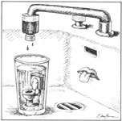

If you'd like our panel of consultants to answer a question concerning some aspect of selfreliant living that has you stumped, send it to Ask Our Experts, MOTHER EARTH NEWS, P.O. Box 70, Hendersonville, NC 28793. The most frequently asked questions will be answered here - and here only - so that we can all benefit from what these folks have to say.
Help! We have a problem we never thought we'd have - too many apples. Our trees are "overbearing," and we don't know what to do with all the fruit!
Congratulations! And I'm glad you don't want to let any of your harvest go to waste. The easiest way to preserve apples - if you have the right storage space - is to "cellar" them. Firm, unbruised apples can keep four months or longer if they're stored at 32 to 40°F and 80% to 90% humidity. (Some folks wrap each one to keep them from touching.)
Another classic way to process lots of apples is to make applesauce. Just simmer cored and peeled quarters in water until tender, mash through a food mill (actually, Golden Delicious apples make nice chunky applesauce if unmashed), add sweetening to taste (none is fine by me), pack hot in clean canning jars, and process in a hotwater bath (10 minutes for pints, 15 for quarts).
Then there's apple butter, which is made by simmering one part cider with two parts peeled and cored apples - stirring occasionally - until the mass gets very thick (this can take several hours). Add sweetening and spices (cinnamon, allspice, ground cloves) to Taste, and process 10 minutes in a boiling-water bath.
If you're fortunate enough to have a cider press, your problems are over. Make a lot of cider. It can be frozen (if you have a not-yet-full freezer) or canned by processing 30 minutes in a hot-water bath. (It won't taste as good as fresh cider, but it'll beat the stuffings out of store-bought apple juice.) If you don't have a cider press, find people who do. They'll probably be glad to work out a reasonable barter.
There's a world of other possibilities, like drying (six pounds of apple slices should dry in a 145°F oven in four to 12 hours), and making apple jelly and apple leather. You can even carve and sell apple-head dolls (they wrinkle up beautifully when the heads dry), or just sell some of the apples themselves.
No, when it comes to apples, you can't have too much of a good thing. - Susan Glaese
Susan Glaese, who authored the compost article in this issue, is MOTHER's head gardener.
I need help in locating manufacturers of what I refer to as "gray-water purifiers," devices that process gray water (some even process black water, I understand) to a drinkable condition, thus enabling the water to be used over and over again.
As one who's concerned with the possibility of polluted groundwater (in addition to the high cost of drilling a well), the gray-water purifying system seems like a logical alternative. The possibility of combining this system with a composting toilet is also an appealing option.
I'd appreciate any information you have concerning this topic.
I know of no such equipment on the commercial market, and if it were available for purchase, I'd recommend against it in the strongest possible terms. Why? Let's start with black water, or any household water that includes toilet waste. First, human feces always contain "ordinary" pathogenic bacteria and viruses that cause gastrointestinal distress, and, depending on the circumstances, they may contain life-threatening bacteria and viruses, such as those responsible for typhoid, diptheria, polio, or worse. Second, we humans have a habit of flushing down the toilet various materials and fluids that contain toxic substances, such as toxic heavy metals present in photographic developing solutions and toxic organic compounds in cleaning formulas, pharmaceuticals, and pesticides. Even if you don't dispose of materials in this way, a visitor or friend may do so.
In any event, using ordinary methods and care, no one can safely and routinely disinfect and detoxify black water for consumption. The theoretical methods that come to mind as possibilities in extreme situations involve 1) large amounts of energy to distill the water multiple times, 2) large amounts of chemicals, especially chlorine, 3) large amounts of land for ponds or soil filtration, and 4) a laboratory for running chemical and bacteriological tests every day.
Now, gray water - or any household water that doesn't include toilet wastes - contains all the same pathogenic and toxic components as black water, only in lower concentrations. For example, both bath and laundry water can contain pathogens washed from a body or clothing.
Having disappointed you, let me close with two thoughts. First, with great care , you may be able to use gray water - but never black water - on your lawn or garden. As I pointed out in MOTHER NO. 82, I strongly recommend against using gray water directly on edible crops, particularly on ones that will be eaten raw or slightly cooked. It's fine, however, for corn, grains, fruit trees, and lawns. Second, never try to store gray water inside or outside your home for even an hour; use it promptly in the summer and empty it into your septic tank or sewer in the winter.
For further information, you may want to contact the Clivis-Multrum USA Company (14A Elliot St., Cambridge, MA 02138), makers and distributors of the original composting toilet, and the New Alchemy Institute (237 Hatchville Rd., East Falmouth, MA 02536), which has done research on using the nutrients in black and gray waters for aquaculture. - David Burmaster
David Burmaster, Ph.D., is a consultant on surface- and groundwater quality and hazardous-waste management. He is the author of numerous articles and reports on these topics.
I burn three to four cords of red oak and black locust in my Ashley stove each winter as the only heat for my 60-year-old, woodframe home. Up until this year, all the firewood has come from my property, but I'm going to have to cut at least a cord elsewhere to get by this winter. The expense and nuisance of finding firewood have me wondering how I might cut down on the amount I burn.
Right now my heater uses the air inside my house for burning, and I'm wondering how much wood I could save by hooking the Ashley's air intake to the outside - so that combustion air wouldn't have to come from the warm air in my house.
My suggestion is to try outside air for a season (if it's not too much trouble to install) and then decide. For some houses and some people, it helps; for others, it doesn't.
It's very difficult to estimate how much wood you would save by using outside air, but it's usually not much. The primary benefit typically is increased comfort due to fewer floor. level drafts. Since comfort is the primary objective of using a wood heater, it may be worth it. However, I wouldn't count on significant fuel savings. A switch to a catalytic stove would probably have much more impact on your fuel consumption, although catalytic stoves aren't inexpensive. - Jay Shelton
Jay Shelton is the director of Shelton Energy Research and the author of various books and articles about solid- fuel heating. For a description of the publications currently available from SER, send a self-addressed, stamped envelope to Shelton Energy Research, P.O. Box 5235, Santa Fe, NM 87502.
|
|
 |
|